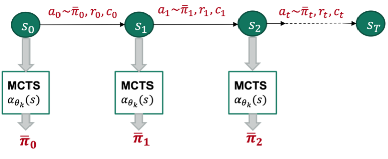
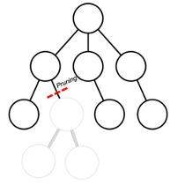

Thesis available for download here: Dinesh Parthsarathy: Safe Monte Carlo Tree Search using Learned Safety Critics
Background
In many real-world environments, like autonomous vehicles, autonomous agents can only explore and learn under strict safety constraints. This setting is known as safe exploration, and has attracted multiple solutions both in model-free [12, 14] and model-based settings [5, 8, 9]. In general, model-based methods have the benefit of higher sample efficiency, which reduces the number of environment interactions (and constraint violations) required during training. This thesis hypothesizes that existing safety mechanisms for MCTS are inadequate, and proposes a different solution.
Problem
MCTS uses a forward model during rollouts. When exploring in real systems, these forward models experience a large error that increases with the lookahead horizon. This compounding error means that MCTS cannot by itself provide safety guarantees., which makes the approach unsuitable for the safe exploration setting.
To ensure safe decision-making, previous approaches in safety-critical systems rely on expert knowledge or rules to mask unsafe actions [5], [6], [7]. Other model-free reinforcement algorithms fall back on MCTS in risky states for safe action searching. The safe exploration module based on MCTS relies on expert knowledge to identify risky states and returns negative rewards during backpropagation so that these states are less favoured during planning [8]. Overall, these approaches rely on a forward prediction model to determine a risky state or an unsafe action. This model cannot be used for all scenarios and needs to be adapted for each environment. Also, the predictions only consider one-step transitions and do not account for long-term dependencies. Alternate ways to incorporate safety is using an MCTS that solves Cost-Constrained (CC) POMDPs [9]. But, additional steps in this algorithm to optimize the Linear Program (LP) induced parameters, and not being able to prune unsafe trajectories due to inaccurate Monte Carlo cost estimates lead to high computational complexity [10].
Approach


To overcome these issues, we learn a safety critic which determines whether a state, action pair would lead to unsafe behaviour [11], [12]. We use this critic as an additional constraint within the MCTS algorithm to prune unsafe trajectories [Figure 2]. This would not only ensure that the planner returns a safe policy, but also improve the efficiency of planning as the search space is reduced. A possible way to initially avoid overestimating the safety critic which might result in excessive pruning is to use the Conservative Q-learning Framework [13]. We test this algorithm by first measuring its performance in a simple grid world environment. Then, we consider a real-world task, as a use case to record our final results. The planning system for this application mimics the AlphaZero pipeline. Combining planning and learning this way, and using Neural Networks as heuristics would further narrow down the search tree. Unlike the game of Go, we have a scenario that has a continuous state space and self-play cannot be used. These deviations from the original AlphaZero algorithm are incorporated. We integrate our safety layer into this pipeline, which learns safety and hence, ensures safe-decision making [Figure 1]. As an outcome, we expect to devise a planner that has greater efficiency and better safety compared to previous approaches. We use MCTS for CC-POMDPs [9] and model-free safe reinforcement learning methods [11], [13] as baselines to compare our results.
Workplan
The milestones of the thesis are as follows:
- Literature and algorithm review (1 month)
- Implementation (2.5 months)
- Implement a model to simulate the environment and for planning. (1.5 weeks)
- Implement an MCTS planner with the AlphaZero pipeline (1.5 weeks)
- Implement different approaches to learn safety and incorporate them into the decision-making pipeline. (7 weeks)
- Evaluation (1 month)
- Evaluate the baseline method(s).
- Evaluate each of the implemented methods.
- Compare the different approaches w.r.t baseline method and create suitable plots.
- Writing (1.5 months)
Supervisor: Christopher Mutschler
References
- T. M. Moerland, J. Broekens, and C. M. Jonker, “A Framework for Reinforcement Learning and Planning,” CoRR, vol. abs/2006.15009, 2020, [Online]. Available: https://arxiv.org/abs/2006.15009
- Nordmark, A., & Sundell, O. (2018). Tactical Decision-Making for Highway Driving.
- M. Świechowski, K. Godlewski, B. Sawicki, and J. Mańdziuk, Monte Carlo Tree Search: A Review of Recent Modifications and Applications. 2021.
- Silver, D., Schrittwieser, J., Simonyan, K. et al. Mastering the game of Go without human knowledge. Nature 550, 354–359 (2017). https://doi.org/10.1038/nature24270
- C. Hoel, K. Driggs-Campbell, K. Wolff, L. Laine and M. J. Kochenderfer, “Combining Planning and Deep Reinforcement Learning in Tactical Decision Making for Autonomous Driving,” in IEEE Transactions on Intelligent Vehicles, vol. 5, no. 2, pp. 294-305, June 2020, doi: 10.1109/TIV.2019.2955905.
- Mohammadhasani, H. Mehrivash, A. Lynch, and Z. Shu, Reinforcement Learning Based Safe Decision Making for Highway Autonomous Driving. 2021.
- Mirchevska, C. Pek, M. Werling, M. Althoff, and J. Boedecker, “High-level Decision Making for Safe and Reasonable Autonomous Lane Changing using Reinforcement Learning,” Sep. 2018. doi: 10.1109/ITSC.2018.8569448.
- S. Mo, X. Pei and C. Wu, “Safe Reinforcement Learning for Autonomous Vehicle Using Monte Carlo Tree Search,” in IEEE Transactions on Intelligent Transportation Systems, doi: 10.1109/TITS.2021.3061627.
- Lee, J., Kim, G.-H., Poupart, P., & Kim, K.-E. (2018). Monte-Carlo tree search for constrained POMDPs. Advances in Neural Information Processing Systems, 31.
- Bernhard, J., & Knoll, A. (2021). Risk-Constrained Interactive Safety under Behavior Uncertainty for Autonomous Driving.
- K. P. Srinivasan, B. Eysenbach, S. Ha, J. Tan, and C. Finn, “Learning to be Safe: Deep RL with a Safety Critic,” ArXiv, vol. abs/2010.14603, 2020.
- H. Bharadhwaj, A. Kumar, N. Rhinehart, S. Levine, F. Shkurti, and A. Garg, “Conservative Safety Critics for Exploration,” 2021. [Online]. Available: https://openreview.net/forum?id=iaO86DUuKi
- Kumar, A., Zhou, A., Tucker, G., & Levine, S. (2020). Conservative Q-Learning for Offline Reinforcement Learning.
- Thananjeyan, B., Balakrishna, A., Nair, S., Luo, M., Srinivasan, K., Hwang, M., Gonzalez, J. E., Ibarz, J., Finn, C., & Goldberg, K. (2021). Recovery RL: Safe Reinforcement Learning with Learned Recovery Zones.